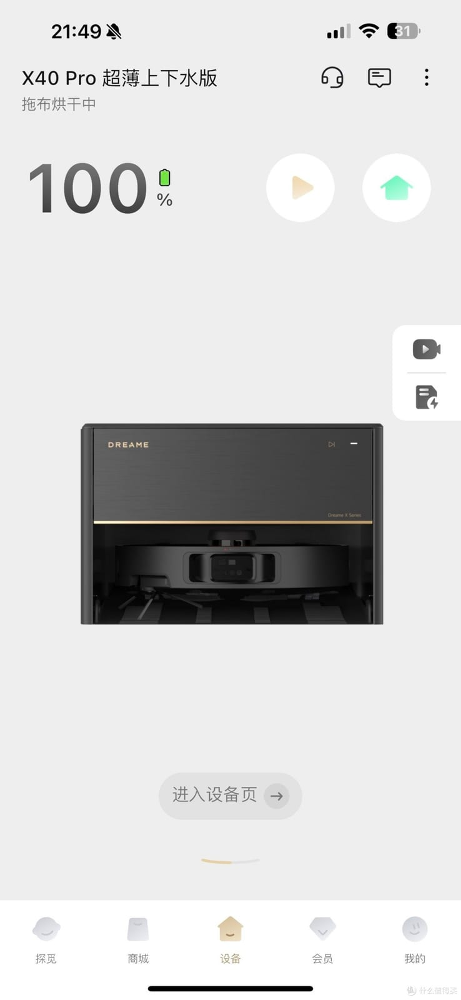

追觅 X40 Pro

追觅旗舰扫拖机器人，边刷带仿生机械臂可外扩，配合拖布外扩机构覆盖墙角死角，吸力标称在同代产品中领先。基站支持热水洗拖布与热风烘干，主打高参数与强清洁能力，适合参数党和养宠家庭。
客观评测
X40 Pro 主打高吸力与机械臂结构，标称约 12000Pa 在同代机型中处于第一梯队，实测对地毯深处碎屑与宠物毛发的拾取效率高。仿生机械臂边刷与 MopExtend 拖布外扩组合，让墙角、柜边的覆盖明显优于固定结构。基站提供自动集尘、约 60-65°C 热水洗拖布与热风烘干，拖布清洁度与干燥度良好。导航与避障采用主流成熟方案，整体是堆料充分的旗舰机型。
主观点评
这台机器给我的感觉就是「力气大」：地毯上的猫砂颗粒一遍过，以往要手动补扫的地方基本不用管。机械臂伸出去扫墙角的画面很有科技感，实际效果也确实干净。噪音在强力档像一台小吸尘器，建议离家时运行。机械臂毕竟是新结构，我心里会打个问号，好在追觅整机质保还算厚道。喜欢追新、家里有宠物的话值得考虑。
优点与不足
- 吸力标称领先，颗粒物与毛发清理能力强
- 边刷加拖布双外扩，死角覆盖完整
- 基站热水洗拖布并烘干，维护省心
- 高吸力档噪音偏大
- 机械臂结构复杂，长期可靠性有待市场检验
参数规格
| 吸力 | 约 12000Pa（标称） |
|---|---|
| 导航 | LDS 激光导航 + 3D 结构光/RGB 避障（约） |
| 拖地 | MopExtend 拖布外扩 + 旋转加压拖地 |
| 边角清洁 | 仿生机械臂边刷，可外扩清洁墙角（约） |
| 续航 | 约 5200mAh，单次约 180-220 分钟（约） |
| 基站功能 | 自动集尘、约 60-65°C 热水洗拖布、热风烘干 |
| 集尘袋 | 约 3.2L，约 75-100 天更换（约） |
| 噪音 | 约 65-68dB（标准档，约） |
| 越障 | 约 2.2cm |
| 智能功能 | 语音控制、地毯识别、宠物粪便避障（约） |
| 建图 | 多层地图、3D 地图、快捷指令 |
| 拖布抬升 | 支持自动抬升（约） |